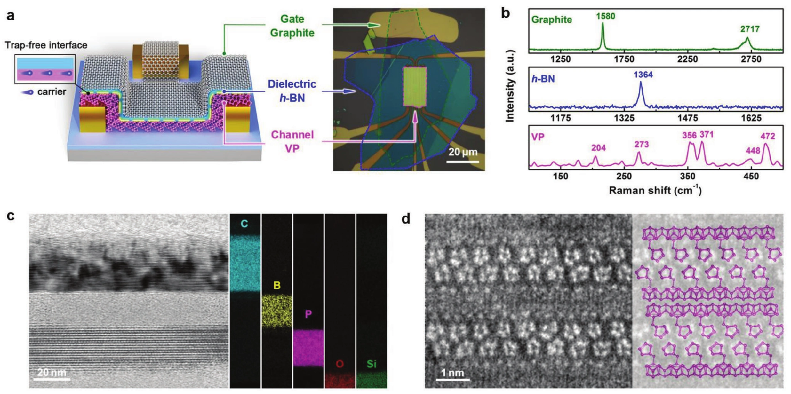
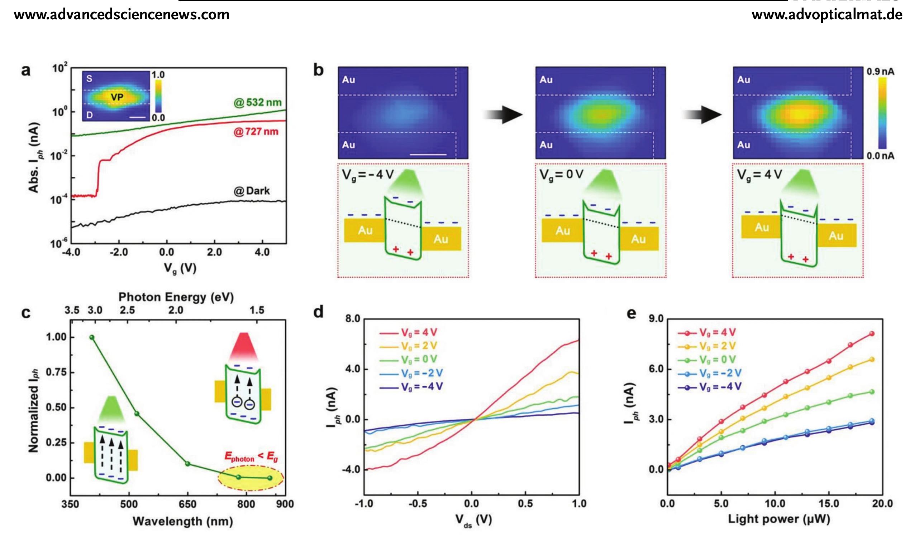
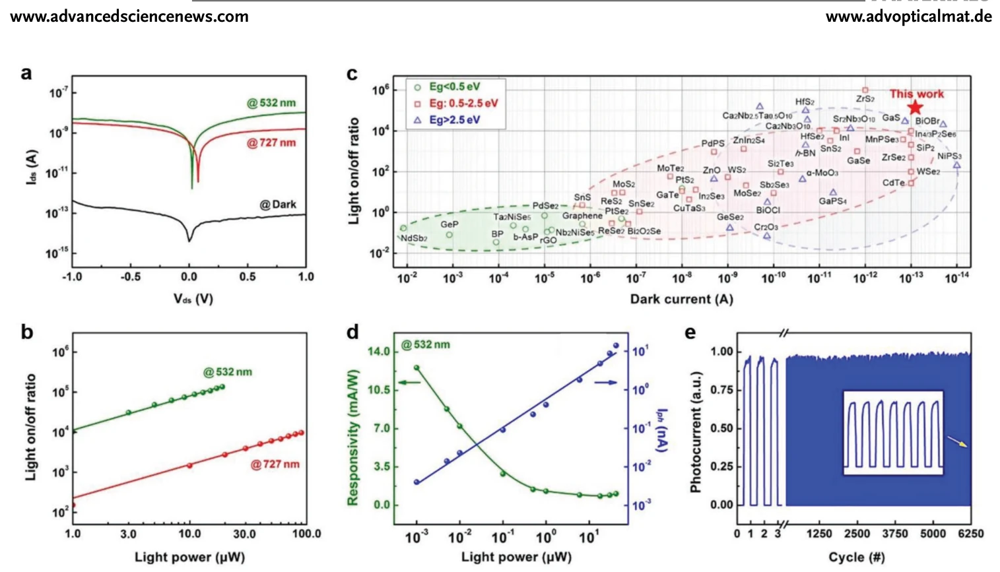
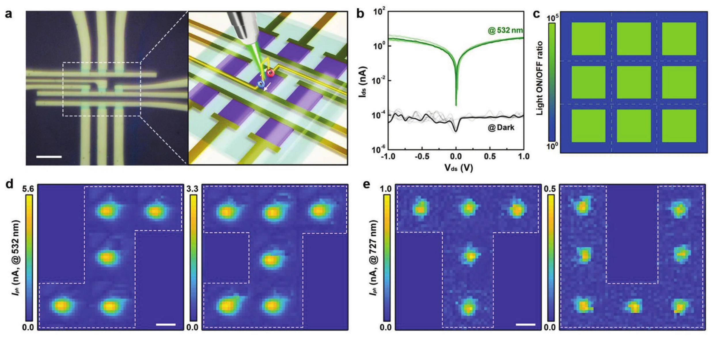

高质量范德华界面：低暗电流与高对比度成像
范德华光晶体管结构与界面表征
器件采用机械堆叠获得 graphite/h-BN/紫磷异质结构。h-BN 表面没有传统氧化物介质中的悬挂键，可减少库仑散射、陷阱俘获和表面吸附物影响；石墨局域栅极隔着 h-BN 调节紫磷费米能级。整个沟道被洁净范德华界面支撑，使栅压能够稳定关断背景载流子。

先压低背景，再提高成像对比度
在合适栅压下，紫磷沟道被深度耗尽，室温暗电流低至 80 fA。低陷阱界面减弱随机俘获–释放产生的噪声和迟滞，使极弱光信号不易被背景电流淹没。与传统 SiO₂ 支撑的器件相比，这种界面工程把光开关比提高到 10⁵ 以上，为暗场景成像提供高信噪起点。

栅压在灵敏度、速度与动态范围之间调节
入射光在紫磷中产生电子–空穴对，源漏电场驱动载流子输运；栅压则决定沟道载流子密度和势垒状态。在接近关断区时，暗电流最低，少量光生载流子也会带来明显相对变化；在较高载流子密度下，器件可提供更大的绝对光电流。由此可针对不同光强选择工作点。

3 × 3 像素验证高对比度图像读取
论文将多个紫磷光晶体管组成 3 × 3 阵列，通过遮罩在不同像素上投射明暗图案，再逐点读取光电流。阵列在不同波长和光功率下仍能清晰还原目标形状，说明低暗电流与高开关比能够直接转化为成像对比度，而不只是单器件性能数字。

论文来源
An Ultrahigh-Contrast Violet Phosphorus Van der Waals Phototransistor
Weilin Chen, Ruan Zhang, Mengyue Gu, Lihui Zhang, Binghe Xie, Zhe Yu, An Chen, Jinjin Li, Shuzhi Liu, Pingqi Gao, Jinying Zhang, Xinghan Cai, Gang Liu
Advanced Optical Materials 12 (2024), 2301399
DOI：10.1002/adom.202301399